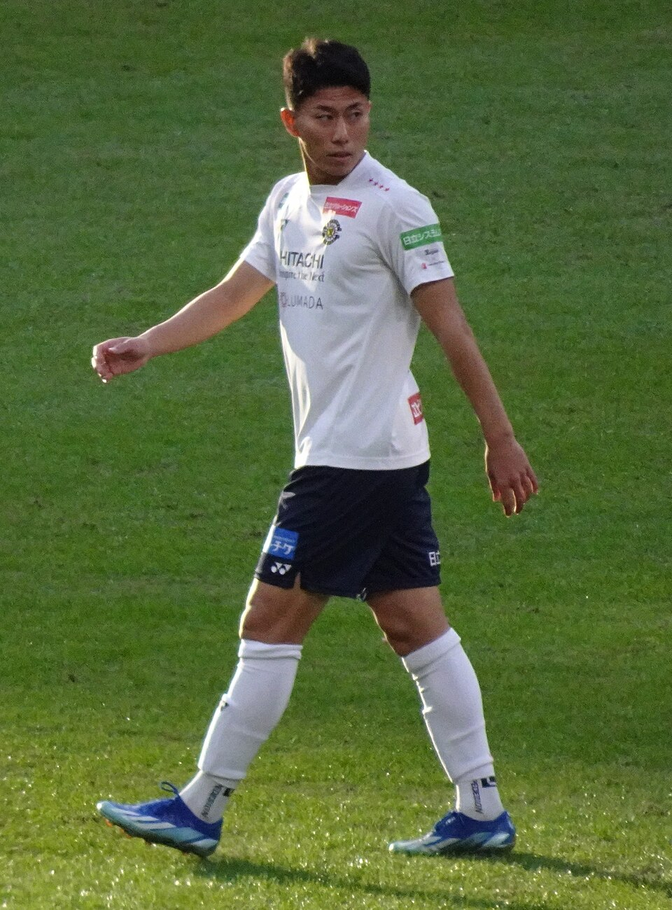

球技
•
サッカー / 男子サッカー
ほそや まお
細谷 真大
Mao Hosoya
🏢 所属: 柏レイソル / 日本代表
🏅 パリ五輪日本代表エース🏅 U-23アジアカップ優勝🏅 Jリーグベストヤングプレーヤー
猛獣のようなフィジカルと一瞬の裏抜け！前線からゴールをこじ開けるストライカー
愛知・名古屋2026 今大会最終結果
準々決勝突破・ベスト4（準決勝）進出決定🔥
大会通算: 3得点（得点ランキング2位タイ）
【最新】準々決勝の難敵イラン戦で前半に強烈なヘディング決勝弾を沈め、1-0の勝利に大きく貢献。チームをベスト4へ牽引し、アジア大会2連覇に向けて準決勝へ挑む。
🎬 最後のシーン（決定的瞬間・ハイライト）
右サイドのクロスに豪快に飛び込みゴールを奪い、コーナーフラッグへ猛ダッシュして歓喜の雄叫び。
▶️ 【YouTube】準々決勝 相手DFに競り勝ちファーネットに叩き込んだ決勝ヘディングゴール を見る
📊 公式トーナメント表・競技記録速報（Draw/Results）
U-23日本代表 グループステージ＆ノックアウトステージ全試合詳細
📊 【日本サッカー協会 (JFA) / AFC (アジアサッカー連盟)】JFA公式 大会日程・全試合結果 を見る ➔
経歴・これまでの歩み
柏レイソルアカデミーで育ちトップチームへ昇格。屈強なフィジカルと前線からの猛烈なプレッシングを武器に頭角を現す。2024年U-23アジアカップでは勝負どころで決勝ゴールを連発し優勝に貢献。パリ五輪でも背番号9として攻撃陣を牽引した。
主要大会ハイライト戦績
2024年
パリオリンピック
準々決勝進出・ゴール記録
2024年
AFC U-23アジアカップ
優勝（カタール大会）
2022年
Jリーグ
ベストヤングプレーヤー賞
プレイスタイル＆世界を制する武器
相手DFを背負っても倒れない強靭なポストプレーと、背後への鋭いダイアゴナルラン。どんな体勢からでもゴールを狙う泥臭くパワフルなシュートが持ち味。
専門家・メディアによる客観的分析・批評
✨
強み・世界トップ水準の評価
相手CBを背負っても倒れない強靭なフィジカルと、背後への鋭いダイアゴナルラン。前線からの猛烈なプレッシングでチームの守備のスイッチを入れる献身性。
出典・ソース:
大岩剛U-23代表監督 / 森保一日本代表監督
⚠️
課題・懸念される客観的事実
ペナルティエリア外からのミドルシュートの決定力や、完全に引いて守りを固められた相手に対する狭いスペースでの打開力・ポストパスの精度。
出典・ソース:
サッカーダイジェスト / FOOTBALL ZONE分析
愛知・名古屋2026への決意とメッセージ
大会スケジュール＆観戦のツボ
🗓️ 出場予定日程・会場
2026年9月18日〜10月3日（豊田スタジアム他）
👀 観戦の注目ポイント
相手CBとの激しい肉弾戦と、ペナルティエリア内での一瞬の抜け出しからの強烈なシュート。